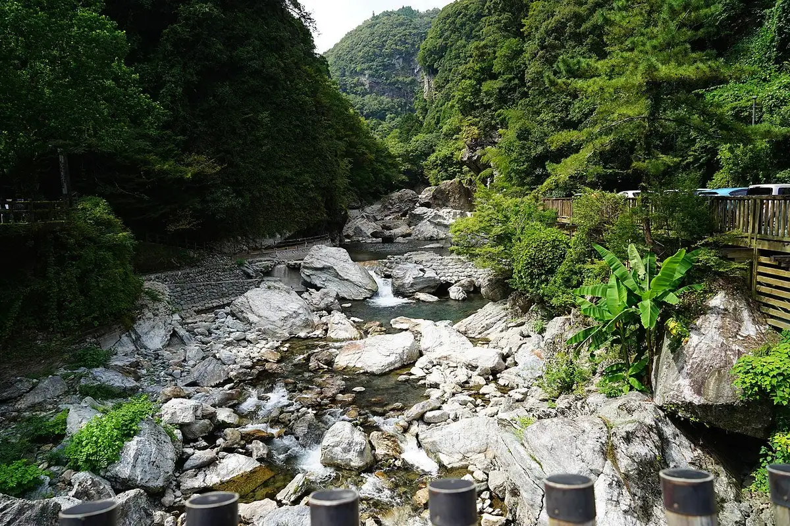
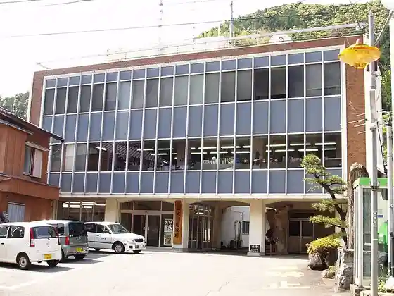
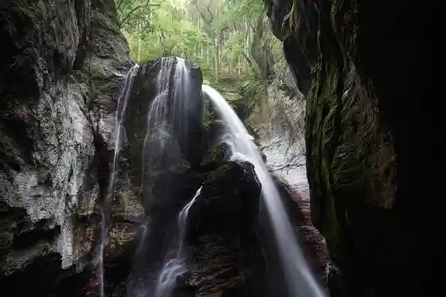
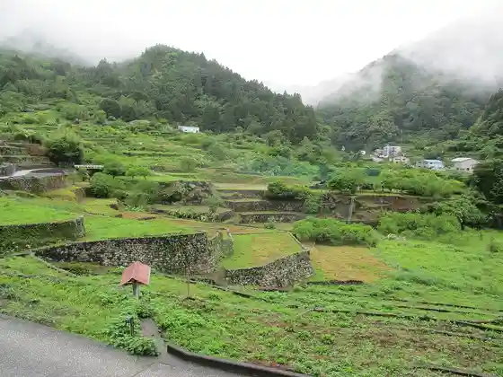
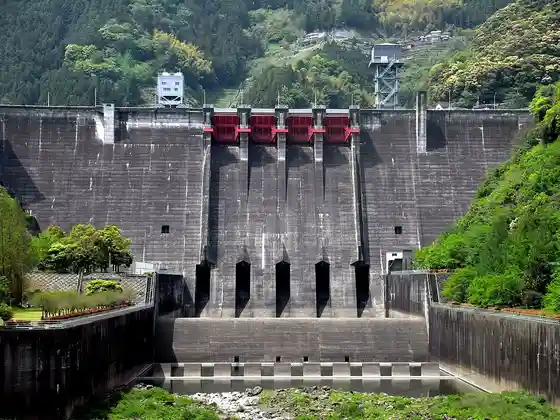

Niyodogawa
Niyodogawa · Kochi
Niyodogawa
Highlighted on the Kochi map.

Stay
Nakatsu Gorge Yu Forest
Dining
Kitahara
Supukare Toransu
Ajidokoro Osaki
PONTE
Ikegawa 439 Koryu Kan
Resutoran Niyodo
Doraibuin Hikichi Hashi
Ebisu Chaya
Sights
Nakatsu Gorge
Niyodogawa Town Hall

Uryu Falls

Choja no Tanada

Owatari Dam

Kaze no Sato Park
Kuki Hashi